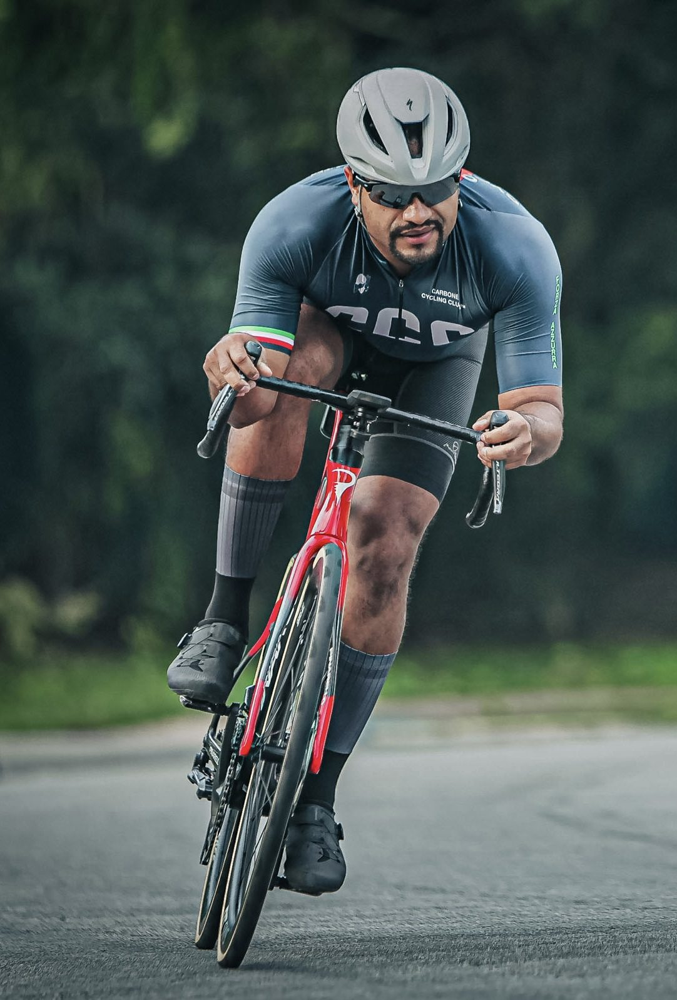
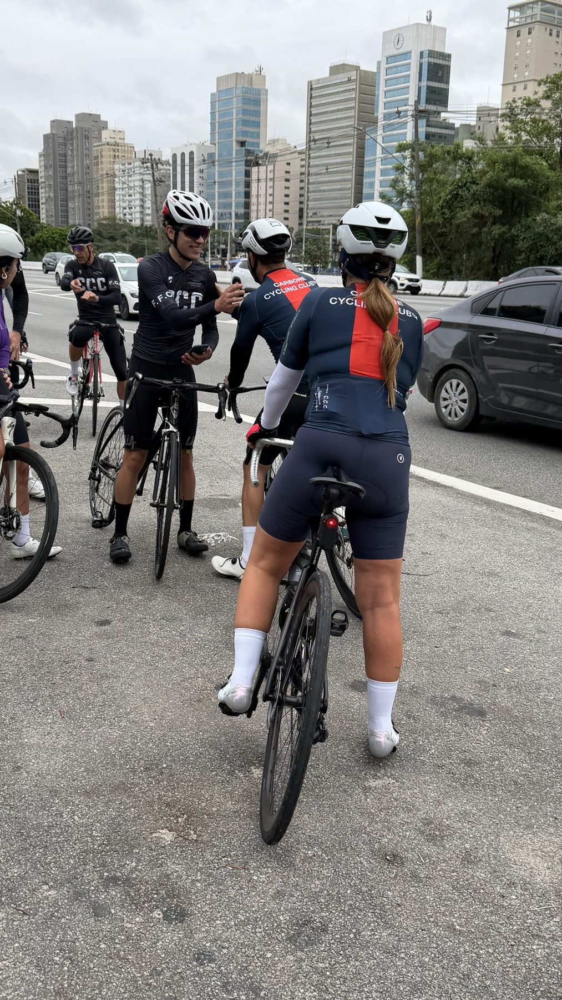
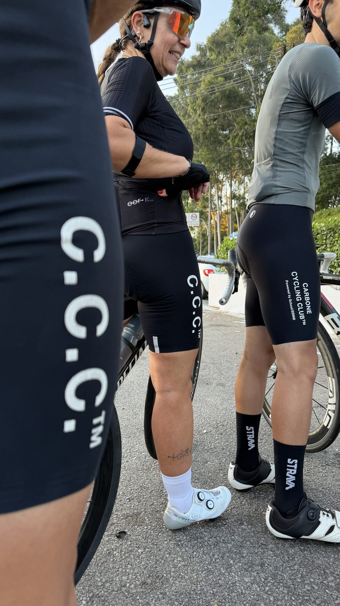
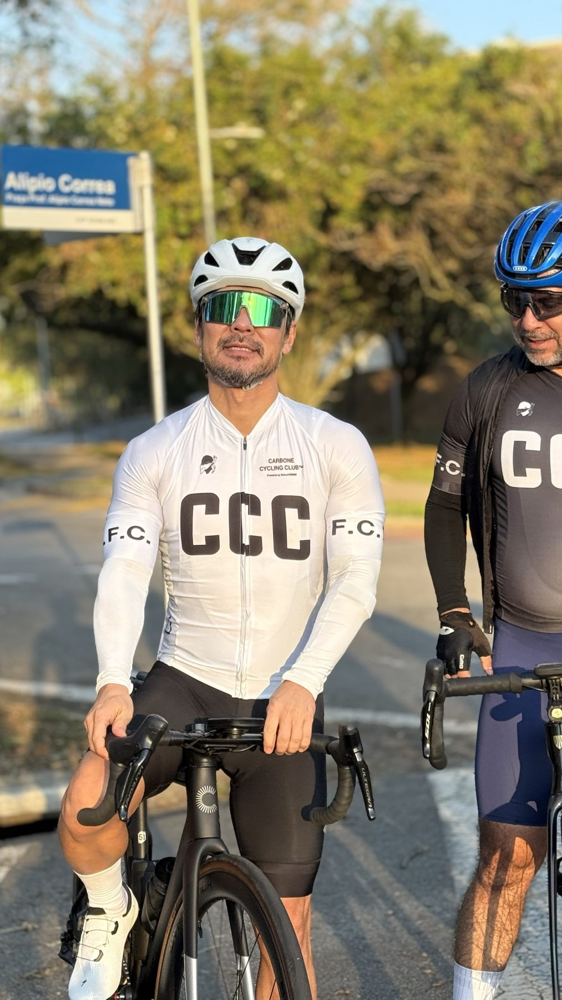
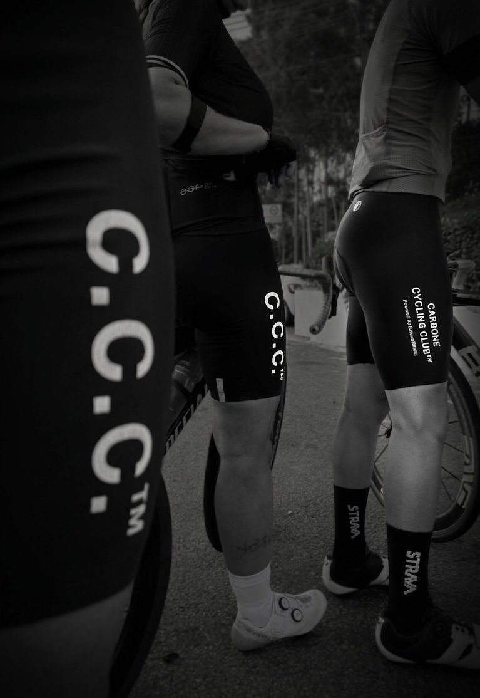
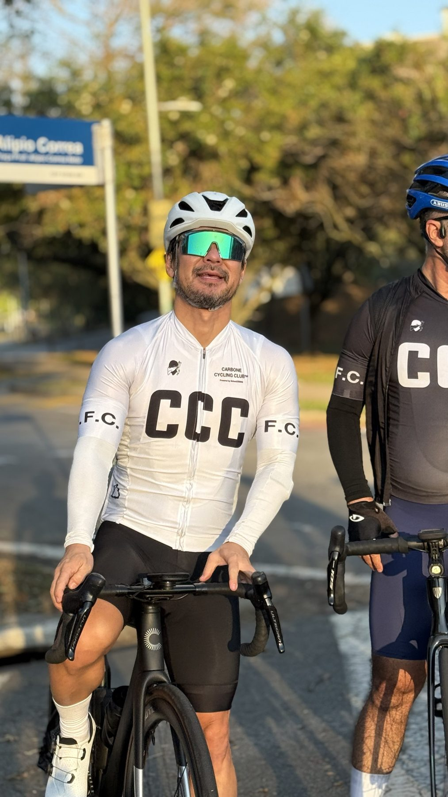

Assessoria
Treino com método
Acompanhamento esportivo para quem quer evoluir com saúde e sem atalhos.
Assessoria esportiva · Cultura de ciclismo
O Carbone Cycling Club é mais que uma assessoria esportiva. É uma turma que treina junto, pedala junto e defende um esporte sem doping, do pelotão amador ao alto rendimento.

A ordem das prioridades do clube. A performance vem depois e vem limpa.
Quem somos
O Carbone Cycling Club foi criado por dois ciclistas que uniram as suas escolas de treinamento para fazer mais do que uma assessoria esportiva.
A marca nasce do estilo de vida e da história dos próprios fundadores. Mistura camuflagem, serigrafia e cultura de rua, com referências que vão de Banksy a Snoop Dogg, das Marginais de São Paulo à região de Marselha.
Nossa bandeira
O clube usa a própria marca como plataforma de educação e conscientização. Os fundadores alertam que o problema também existe no ciclismo amador, onde há menos controle e provas sem teste antidoping.
Mais praticantes na base significam mais atletas no alto rendimento.Ideia defendida por um dos fundadores, em entrevista à CARAS Brasil (2022)
Levar informação sobre os riscos à saúde de substâncias proibidas, inclusive quando aparecem com nomes mais bonitos.
Muitas provas de rua têm organização própria e não passam por controle. É nelas que a conscientização faz mais falta.
Um convite para que outras assessorias e profissionais levantem juntos a mesma bandeira.
O símbolo
O nome é uma referência irônica a Paul Carbone, da "French Connection", e usa a crítica com humor para falar de ética no esporte. O símbolo se baseia na bandeira da Córsega de 1755, terra natal de Paul Carbone.
Universo Carbone
A visão do clube é acompanhar o cliente no pedal e também fora dele.
Acompanhamento esportivo para quem quer evoluir com saúde e sem atalhos.
Roupas desenhadas por um time de designers, com a estética de rua da marca.
Experiências para pedalar em boa companhia, longe da rotina.
Pedais, conversa e amizade, com o clube também no Strava.
Galeria





Strava
O Carbone Cycling Club tem clube oficial no Strava. Entre para acompanhar as atividades da turma, comparar treinos e fazer parte da comunidade.
Contato
Quer treinar com a assessoria ou entrar na turma? Fale direto com o Vito pelo WhatsApp.